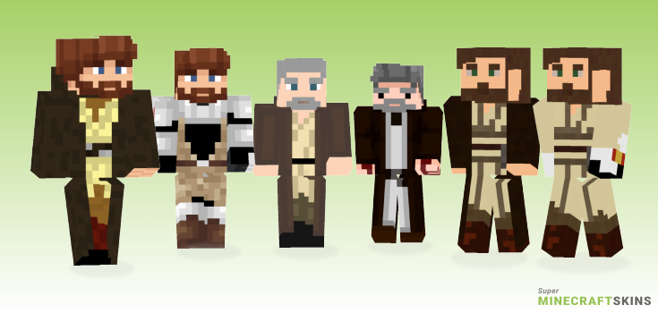

19 BBY: Obi-Wan hunts down and kills the Separatists’ cyborg military commander General Grievous
19 BBY: *Anakin does some very minor trolling during this time*
19 BBY (meme time): The greatest show down to ever happen, happens. Padawan Anakin Skywalker versus Master Jedi Obi-Wan Kenobi, who will win?What possible memes will come from this? The potential is infinite!I wonder if there will ever be a fight as good as this ever again in the IP? (no)
19 BBY: Obi returns to a dying Padmé who later gives birth to Luke and Leia
19 BBY (later): Guarding Luke, Obi-Wan goes into hiding. Never to be seen again (especially not in a solo tv show)

An example of only SOME known variants (shows the range of variation)
Left Most: Prequals Robed
Left Middle: Clone Wars Armored
Left Center: Originals Old
Right Center: "Simple" Originals Old
Right Middle: "Plastic" Prequals Robed
Right Most: "Plastic" Prequals w/ Partial CW Armor
Here is a comprehensive list of all and every variant know
If you have time, you should read more about this incredible being on the Wikipedia entry.